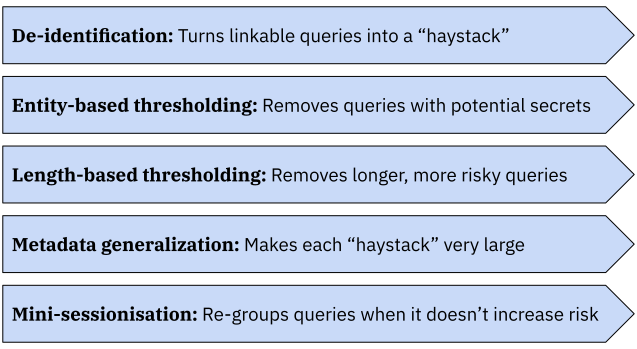

How and why Google will share anonymized search data with their competitors
In Europe, the online search engine market is very concentrated: Google Search has had around 90% of the market share for over a decade. This gives Google access to a massive amount of data about what people search for, what they click on, what modules they interact with on the page, and so on.
This data is immensely useful to optimize a search engine. To understand why, let's look at one of my recent online sessions on Google Search. I type “grand prix”, stay on the search page for less than 2 seconds without clicking on anything, then go back to the search bar and type “grand prix attack”. I click on the first link from chess.com, then go back to the search page after 1.5 seconds, then click on the second link from Reddit, then go back to the search page after 37.8 seconds, then click on the first video result by Eric Rosen and don't ever come back to the search page.
What has Google learned in the process?
- Some people who look up “grand prix” are actually looking for chess content and not Formula 1. It might be worth suggesting “chess” as an autocompletion for this term.
- The chess.com link, despite its nice favicon and great branding, may not actually be that useful for people who look up a chess opening, since I only stayed on this page for such a short time.
- By contrast, the reddit.com page seems much more useful. I stayed there long enough to read and engage with the content, so I must have thought this was worth it.
- Returning videos is a great idea for chess-related searches; more specifically, Eric Rosen is a trusted source of educational chess content.
Multiply this by hundreds of millions of users who regularly look up things on Google Search, and this data is absolute gold to improve a search engine. It helps you suggest good autocompletions, understand what users mean when they type ambiguous queries, learn which websites users find most useful so you can show them first in the results and crawl them more regularly, among a ton of other use cases.
Every search engine provider uses their own data to optimize their product. But the magnitude and the diversity of the data matters a lot: regardless of how much you optimize your machine learning pipelines, if you have orders of magnitude less data than Google, you won't be able to match Google Search's performance. This phenomenon occurs for all kinds of learning tasks — Google scientists called it the “unreasonable effectiveness of data” in a 2009 article.
Leveling the playing field
The European legislator considered that the lack of healthy competition in the search engine market was a problem. In 2022, it passed1 the Digital Markets Act (DMA) to address it. The DMA attempts to encourage healthier competition in a large variety of digital markets, and Article 6(11) is specifically about the online search engine business. It states the following:
The gatekeeper shall provide to any third-party undertaking providing online search engines, at its request, with access on fair, reasonable and non-discriminatory terms to ranking, query, click and view data in relation to free and paid search generated by end users on its online search engines. Any such query, click and view data that constitutes personal data shall be anonymised.
Here, the “gatekeeper” is Google2: they must share their search data with competitors, in anonymized form. In March 2024, to comply with DMA 6(11), Google started to offer access to an anonymized dataset to its competitors. There was no significant uptake: even though search data is incredibly valuable to optimize a search engine, and competing search engine providers are starved for data, they didn't think Google's offer was worth taking.
In reaction to the lack of uptake of Google's proposed dataset, the European Commission decided to intervene. In January 2026, it opened specification proceedings to attempt to resolve the issue. The proceedings ended last month, and the full decision was published this week. It describes in great detail how Google needs to comply with Article 6(11).
In October 2025, the European Commission asked me to help them with these proceedings. I quickly understood why: the anonymization strategy chosen by Google was the single greatest issue with their compliance approach. Their design choices rendered the data all but useless for optimizing a search engine. This makes sense considering the incentives at play: obviously, the last thing they want is for their competitors to build good alternatives to Google Search.
I've been working with them throughout the proceedings, and it's been an interesting ride! I helped with a variety of tasks:
- analyzing Google's proposed anonymization approach in detail3,
- collecting information by meeting and asking written questions to Google and its competitors,
- designing an alternative solution to anonymize the data,
- performing data analysis to evaluate its effectiveness (with the help of my excellent colleague Rebecca),
- understand the many (many) pieces of evidence used in this case,
- address all the feedback from public consultations and Google's technical arguments and experimental evidence,
… and more. In the rest of this blog post, I'll explain the anonymization approach selected by the Commission to enable this data sharing in a way that achieves both the privacy and utility goals set forth by the relevant legislation.
Disclaimer: I have been working with the European Commission as part of a series of paid engagements. This blog post is not part of our contract; it is strictly based on publicly available information, and I am not being paid for it. The Commission reviewed it for factual accuracy, and to make sure that I'm not revealing anything confidential. All opinions remain my own.
Privacy goals
The DMA specifies that the search data must be anonymized. What is the exact criterion used to determine whether the shared data passes the anonymization bar? The standard set forth by the DMA (in Recital 61) is as follows. It will sound familiar to readers who know GDPR's Recital 26.
The relevant data is anonymised if personal data is irreversibly altered in such a way that information does not relate to an identified or identifiable natural person or where personal data is rendered anonymous in such a manner that the data subject is not or is no longer identifiable.
This requirement is further clarified in a separate document, the Draft Joint Guidelines on the interplay between DMA and GDPR, co-written by the European Data Protection Board and the European Commission. These guidelines establish two important (and fairly unique) specificities of Article 6(11) data sharing.
- First, only end users are covered by the privacy goal. Say that Alice searches for Bob's full name, and one of the results contains Camille's personal website. Then, only Alice's identity must be protected: someone looking at the anonymized data must not be able to tell that Alice submitted this query. But it's OK to share the query or its results even if they contain Bob's or Camille's personal information.
- Second, anonymization may be met with a combination of technical measures (modifying the data itself) and non-technical measures (everything else4). Technical measures need to be prominent, but it's OK if they leave some non-zero level of re-identification risk, as long as this residual risk is then adequately mitigated by the non-technical measures.
The first point means that even if the anonymization goal is met, the shared dataset still contains personal data. So the GDPR still applies to this data! This is unusual: usually, organizations anonymize data because they want to take it out of scope of GDPR obligations entirely.
The second point means that the technical measures don't need to be entirely bulletproof. They only need to bring down the re-identification risk to an acceptable “residual” level. The law doesn't specify exactly what this residual level of risk means in practice; we made this notion more concrete in the following way.
[…] risks are considered beyond residual level after application of technical measures if they meet any of the following criteria:
- An adversarial entity can choose a specific individual and, with significant probability, retrieve some of their search records with high certainty.
- An adversarial entity can choose a random search record and, with significant probability, re-identify the end user with high certainty.
- An adversarial entity can perform attacks that re-identify a large number of end users with high certainty and with reasonably simple methods.
This corresponds to the main two risk factors of this data sharing scheme.
- Indiscreet employees could try to find the search records of people they know about or be overly curious and attempt to re-identify the data they see in the course of their jobs. This is often called “insider risk” and must be mitigated.
- Product or data analysis teams within recipient organizations could, in violation of their contractual obligations, attempt to re-identify the data and use it for other purposes (like augmenting other datasets).
In particular, this definition means that finding a few specific edge-case examples of records that may be reidentifiable is not an indication that the risk is above this residual level. If it can only happen for a very low fraction of records and/or with a lot of inherent uncertainty, this is acceptable: it can then be complemented by non-technical measures to address residual risk. We're not trying to provide formal guarantees that hold for any attacker, like in differential privacy; this would be largely incompatible with achieving reasonable utility for this use case. Rather, we're trying to mitigate the bulk of the real-world risk, considering realistic adversaries and extensive non-technical protections.
Utility goals
Article 6(11) also specifies that if multiple possible methods meet the anonymization bar, one must choose the one that retains most utility. To determine what this means in practice, we spent a long time discussing with search engine providers to understand how they would use the data5. Of course, I expected search engines to be complex systems, but the sheer number and diversity of potential use cases still took me aback. Different providers have very different interests and business strategies, and each one has many distinct uses for this data.
There are three categories of use cases for which the asymmetry in access to user data is particularly painful for Google's competitors.
- Crawling and indexing. Search engines need to maintain an up-to-date list of all the Web pages that can be returned as a result (the “index”), which they obtain by having bots access the Web (“crawling”). Access to more data helps search engines understand where the gaps are in their index, determine what to crawl, and decide how often to crawl different websites.
- Query understanding. Queries submitted by users are often vague and ambiguous, but users still expect the search engine to understand what they mean and give them good results. Machine learning models are trained on user queries and interactions to figure out what queries actually mean. More data makes these models perform much better.
- Ranking and quality. This is about deciding which modules and results to show in search results, and in which order. Users want (and expect) to see useful, trustworthy results near the top of the page. Interaction data is critical to improve the underlying algorithms.
For all the three use cases above, the asymmetry in data access is about the long tail. Online search engines don't need Google data to provide good results to queries like “weather zürich tomorrow”, or “capital of switzerland”. But it's a lot harder to do a good job answering novel and ambiguous queries, for which relevant results are on rarely-visited websites. And these are very important for user satisfaction! If a search engine does a good job answering 90% of queries, but fails on the remaining 10%, this is often enough to be an unacceptable level of quality for end users.
The “long tail” means something different for all three use cases.
- For crawling and indexing, what matters are impressions and clicks on URLs that are rarely viewed or rarely clicked: those are the ones that are most likely to be missing from competitors' indexes.
- For query understanding, the rare queries are super important: 15% of search queries seen by Google Search every day are brand new, and the diversity and scale of this long tail is critical to build performant models.
- For ranking and quality, interaction data is critical. It's very useful to know that someone went back to the search page quickly after clicking on the first result, but stayed on the second result longer. And this interaction data is only useful when provided with the relevant context: which results did the user not click on?
All these data attributes, and many others, were considered to be in scope of Article 6(11) by the Commission's legal analysis.
Specified approach
The privacy guarantees of the data sharing scheme specified by the European Commission come from the combination of three sources: eligibility, technical measures, and non-technical measures.
![A simple diagram with three boxes. The first one reads "Eligibility: Only
established search engines, or credible new entrants, may acquire the data.
Special prohibitions apply.", an arrow points to the second one: "Technical
measures: Modify the data to mitigate most of the risk. May leave some low, but
non-zero, “residual” re-identification risk.", and a second arrow points to the
third one "Non-technical measures: Usage limitations and obligations that bring
the risk down to “insignificant”. Compliance is audited
yearly."](images/anon-approach-6-11.svg)
Eligibility
Strict criteria limit who can be a recipient of Google Search data: only established online search engines or credible new entrants are eligible, and additional guardrails prevent foreign state actors from gaining access to it.
- Qualifying as an established online search engine requires 50,000 monthly active users, and either more than 2 years of existence, or more than 50,000,000€ in capital investments.
- Alphabet must then assess the eligibility of potential recipients, and may reject them if they're subject to restrictive measures by the EU (e.g. sanctions), or if they're controlled by a non-EEA state actor that poses “serious and structural […] data protection risk”6.
Most online search engines that you've heard of should be eligible, which is good for competition. The Commission also determined that if an AI chatbot has a search feature to find and summarize information from the Web, they should also count as online search engines. This is aligned with Google's own pivot to deeply integrating AI features into Google Search.
On the other hand, the barrier of access for new entrants is pretty high: people can't just pop up a fake search engine for the sole purpose of accessing the data, and there are several filters in place to catch ill-intended actors.
Technical measures
The bulk of the risk mitigation happens through the technical measures. They were a primary focus of our work, and must reduce the re-identification risk to a sufficiently low residual level as defined above. The procedure specified by the European Commission has five main stages7.

-
De-identification and attribute removal. For each search record, the procedure removes user identifiers, precise timestamps, and a number of other attributes that could potentially be used as a user fingerprint.
-
Query suppression based on rare entities. Each search query is passed through a personal data detector to extract full names, addresses, phone numbers, location coordinates, and so on; then, each separate word is also extracted from the query. If either of these “entities” has been searched by fewer than 50 distinct users in the past year, the search record is removed.
-
Query suppression based on length. All search queries that are longer (in characters) than the 95th percentile of search queries for the same language are removed8.
-
Metadata generalization. The end user location associated with each search query is replaced by a large region9, and the precise device type is replaced by a broad category (either desktop, mobile, or tablet).
Then, the procedure checks if at least 1,000 signed-in users share the same location, device type, and inferred language in the data. If not, the location is further coarsened to country-level. If the 1,000-user threshold is still not met at that level, the search record is removed entirely10. -
Mini-sessionisation. The procedures looks for instances in the original data where a user submitted a search query, then either (1) clicked on a link on the results page, which submitted a second search query (e.g. “Did you mean…” suggestions, entity chips, etc.); or (2) entered a new query into the search box on the results page, and the first query is a substring of the second one.
The procedure then associates the corresponding records together to form mini-sessions, with a limit of 3 successive queries.
Let's go through these steps one by one to understand the intuition behind each one.
-
De-identification is the most important step: it turns a dataset with full search histories for each user into a “haystack” of individual queries. The goal is to make it so that if someone looks at the anonymised data, they cannot combine multiple queries from the same user to build a rich profile about them and use this for re-identification. This comes at a steep utility cost: recipients (unlike Google) don't have full search sessions, which can be very useful for in-depth query understanding.
-
Word- and entity-based query suppression is designed to remove secrets from the data. Think package tracking numbers, links to nonpublic URLs, passport numbers, and so on: such queries are more likely to contain personal data that can be associated with the end user. Many such removals are false positives (like typos), but this is unavoidable.
-
Length-based query suppression mitigates the risk from particularly long queries, which are more likely to be accidental copy and pastes of private documents, and can contain more identifiable data. Similarly, this incurs some utility cost (longer queries are often innocuous but useful to understand long-tail behavior), but mitigates an important factor of potential risk.
-
Metadata generalization makes each “haystack” of queries large enough to prevent attackers from figuring out which search records come from the same user. It leaves some valuable metadata attributes in the data, while mitigating the fingerprinting risk. The hard threshold is at 1,000 users, but the majority of users are in much larger buckets (95% are in groups of 25,000 users or more).
-
Finally, mini-sessionisation recovers some of the data value that was lost due to de-identification, without meaningfully increasing the privacy risk. It augments the dataset with information about refinement queries: situations where the user didn't find what they were looking for because their initial query was too vague, and directly modified their search. The conservative criteria on when queries can be associated in this way ensures that a mini-session typically doesn't reveal any additional information compared to just the final query.
The strategy was designed to mitigate the vast majority of the issues that could cause end user re-identifiability risk, and ensure that in the unlikely event that re-identification happens, the attacker doesn't learn anything useful about their target.
But nobody is arguing that these technical measures bring the risk to zero! Their role is to mitigate it to a residual level that meets the above criterion. It's the combination of technical and non-technical measures, taken together, that meets the anonymisation bar.
Non-technical measures
The eligibility criteria are just the first step for an organization to access to the data. They must then demonstrate that they will be able to comply with a series of non-technical measures, governing the processing and usage of the anonymized search data. Here are some of its key requirements11.
- Segregated processing environment. Recipients must separate the computing environment in which the search data is stored and processed from the rest of their infrastructure. Copying it elsewhere, or sharing it with third-parties, is strictly forbidden.
- Purpose limitation. Recipients can only use the search data to optimize their online search engines. For AI chatbots, search data can be used to optimize the “search and retrieval” part of their operation, not to train or fine-tune general-purpose LLMs. Using the data for any other purpose is strictly forbidden.
- Prohibition against linking, re-identification and augmentation. Recipients must not attempt to link the search data with auxiliary datasets, try to figure out an end user's identity, nor augment the dataset in a way that reverses some of the technical measures. Note that this doesn't matter whether such attempts would be successful: the very act of trying would be a breach of their contractual obligations.
- Retention. Recipients must delete the data 13 months after they receive it.
- Governance and traceability. Recipients must record and track all operations that access the search data, and models trained or fine-tuned with it must be evaluated to ensure that they don't reproduce re-identifiable data.
Those aren't just pinky promises: recipients must pass a first independent audit to confirm that they have set up the necessary infrastructure and processes before getting access to the data. Then, yearly audits are conducted to monitor compliance with the above restrictions.
This is an extremely restrictive data sharing setup! It massively reduces the incentives for recipients to do anything inappropriate. A breach of contractual restrictions would mean losing access to this very valuable data, which would have painful consequences for their competitiveness in the online search engine market, and make them lose sunk investments.
Evaluation
A lot of thought went into designing the anonymisation strategy. I supported the Commission in performing threat modeling, listing potential attackers (along with their goals, incentives, and capabilities), coming up with a criterion to define the target level of residual risk, and designing technical measures to meet this bar and non-technical measures to further mitigate this residual risk. This strategy was then evaluated in multiple ways.
- The Commission published a preliminary version of the measures and encouraged the community to provide feedback and suggest changes. We carefully read and took into account the feedback we received12.
- We performed data analysis and adversarial experiments on a sample of search data shared by Google13.
- Google also performed adversarial analysis and submitted the results of their investigations. We then assessed these results and took them into account to improve the measures where needed.
There were major differences in the approaches taken by us and by Google.
- We evaluated the technical measures against a risk framework which recognizes that a residual level of risk can remain after the technical measures. More precisely, our goal was to quantify the success of an attacker focusing on specific individuals or random records, or trying to perform re-identification with a high level of certainty at scale.
- Google focused on the worst-case records in the data, trying to identify rare edge cases that suggest end-user reidentifiability.
Google made a number of scary-sounding claims in the press, in particular claiming to have re-identified users in “less than 2 hours”. There are many of caveats to this claim: they ignored non-technical measures, they threw more resources at the problem than would ever be realistic for a data recipient, their claims are based on the preliminary measures, they largely didn't validate their claims nor quantified their certainty level, and so on.
Most of what they found was compatible with our risk framework. The technical measures are not supposed to bring the risk to zero, so it is not surprising that one might find a small number of re-identifiable records.
Still, whenever their experiments identified issues that suggested that the risk was beyond the residual level set in our framework, we adapted the measures: for example, we excluded all sponsored results from the dataset, used much larger geographic regions for location metadata, and increased the metadata threshold.
Next steps
Google has 6 months to implement the technical measures and finalize the processes for data access; competing search engine providers could start receiving data in early 2027. That being said, I expect that Google will continue resisting sharing valuable data with competitors in any way they can — be it in court or through lobbying efforts to the media, regulatory spaces, and professional communities.
Meanwhile, the Commission will keep a close eye on the process, and help oversee the finalization of implementation details. It has also planned regular reviews to check if the measures are effective (both from a competition and privacy standpoint) and take into account any new developments. This is probably not the last you hear of this!
-
Despite much kicking, screaming, and well-funded lobbying by large big tech companies, some of which is undisclosed. ↩
-
One day, if the implementation of DMA Article 6(11) is wildly successful, there may be another search engine that is also designated as a gatekeeper. ↩
-
Which was pretty shocking to me — considering the amount of internal expertise and experience they have on anonymization technology, it's pretty clear that they could have done much better if they wanted to. ↩
-
Note that this isn't just legal constraints: it includes information security rules that would be called “technical measures” in other contexts: data governance rules, access controls, logging and auditing, and so on (cf. later in the blog post). ↩
-
Something that Google should have done 2-3 years ago, in a genuinely collaborative fashion. ↩
-
This blog post presents a very simplified overview of the technical measures. A more comprehensive description can be found in paragraphs 594-611 of the official decision. ↩
-
For example, for English-language queries, the threshold is somewhere between 50 and 75 characters. ↩
-
Based on the NUTS 3 administrative divisions, to be precise. Those are designed to contain between 150,000 and 800,000 inhabitants. ↩
-
This is our old friend k-anonymity, in case you're wondering. ↩
-
Again, not comprehensive. See paragraphs 818-828 of the decision for a full list. ↩
-
On that subject, here's something that genuinely floored me: several respondents were remunerated by Google for their participation in the public consultation! See paragraph 47 of the decision for more details. ↩
-
There's also a lot to say about the surprising delays and arbitrary technical limitations involved in this data sharing process. See e.g. paragraphs 717 and 718 of the decision, and in particular Footnote 1033. ↩